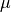
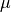
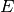
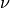
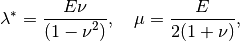

Isotropic linearized elasticity brick¶
This brick represents a term
with
is the small strain tensor,  is the stress
tensor,
is the stress
tensor,  and  are the Lamé coefficients. This represents
the system of linearized isotropic elasticity. It can also be used with
together with the linear incompressible brick to build the
Stokes problem.
and  are the Lamé coefficients. This represents
the system of linearized isotropic elasticity. It can also be used with
together with the linear incompressible brick to build the
Stokes problem.
Let us recall that the relation between the Lamé coefficients an Young modulus  and Poisson ratio  is
except for the plane stress approximation (2D model) where

The function which adds this brick to a model and parametrized with the Lamé coefficients is:
ind_brick = getfem::add_isotropic_linearized_elasticity_brick
(md, mim, varname, data_lambda, data_mu,
region = size_type(-1));
where dataname_lambda and dataname_mu are the data of the model representing the Lamé coefficients.
The function which adds this brick to a model and parametrized with Young modulus and Poisson ratio is:
ind_brick = getfem::add_isotropic_linearized_elasticity_brick_pstrain
(md, mim, varname, data_E, data_nu, region = size_type(-1));
This brick represent a plane strain approximation when it is applied to a 2D mesh (and a standard model on a 3D mesh). in order to obtain a plane stress approximation for 2D meshes, one can use:
ind_brick = getfem::add_isotropic_linearized_elasticity_brick_pstress
(md, mim, varname, data_E, data_nu, region = size_type(-1));
For 3D meshes, the two previous bricks give the same result.
The function:
getfem::compute_isotropic_linearized_Von_Mises_or_Tresca
(md, varname, dataname_lambda, dataname_mu, mf_vm, VM, tresca_flag = false);
compute the Von Mises criterion (or Tresca if tresca_flag is set to true) on the displacement field stored in varname. The stress is evaluated on the mesh_fem mf_vm and stored in the vector VM. It is not valid for 2D plane stress approximation and is parametrized with Lamé coefficients. The functions:
getfem::compute_isotropic_linearized_Von_Mises
(md, varname, data_E, data_nu, mf_vm, VM);
getfem::compute_isotropic_linearized_Von_Mises
(md, varname, data_E, data_nu, mf_vm, VM);
compute the Von Mises stress, parametrized with Young modulus and Poisson ratio, the second one being valid for 2D plane stress approximation when it is applied on a 2D mesh (the two functions give the same result for 3D problems).
The program tests/elastostatic.cc can be taken as a model of use of a linearized isotropic elasticity brick.
Linear incompressibility (or nearly incompressibility) brick¶
This brick adds a linear incompressibility condition (or a nearly incompressible condition) in a problem of type:
This constraint is enforced with Lagrange multipliers representing the pressure, introduced in a mixed formulation.
The function adding this incompressibility condition is:
ind_brick = getfem::add_linear_incompressibility
(md, mim, varname, multname_pressure, region = size_type(-1),
dataexpr_penal_coeff = std::string());
where varname is the variable on which the incompressibility condition is prescribed, multname_pressure is a variable which should be described on a scalar fem representing the multiplier (the pressure) and dataexpr_penal_coeff is an optional penalization coefficient for the nearly incompressible condition.
In nearly incompressible homogeneous linearized elasticity, one has
where is one of the Lamé
coefficient and  the penalization coefficient.
the penalization coefficient.
For instance, the following program defines a Stokes problem with a source term and an homogeneous Dirichlet condition on boundary 0. mf_u, mf_data and mf_p have to be valid finite element description on the same mesh. mim should be a valid integration method on the same mesh:
typedef std::vector<getfem::scalar_type> plain_vector;
size_type N = mf_u.linked_mesh().dim();
getfem::model Stokes_model;
laplacian_model.add_fem_variable("u", mf_u);
getfem::scalar_type mu = 1.0;
Stokes_model.add_initialized_data("lambda", plain_vector(1, 0.0));
Stokes_model.add_initialized_data("mu", plain_vector(1, mu));
getfem::add_isotropic_linearized_elasticity_brick(Stokes_model, mim,
"u", "lambda", "mu");
laplacian_model.add_fem_variable("p", mf_p);
getfem::add_linear_incompressibility(Stokes_model, mim, "u", "p");
plain_vector F(mf_data.nb_dof()*N);
for (int i = 0; i < mf_data.nb_dof()*N; ++i) F(i) = ...;
Stokes_model.add_initialized_fem_data("VolumicData", mf_data, F);
getfem::add_source_term_brick(Stokes_model, mim, "u", "VolumicData");
getfem::add_Dirichlet_condition_with_multipliers(Stokes_model, mim,
"u", mf_u, 1);
gmm::iteration iter(residual, 1, 40000);
getfem::standard_solve(Stokes_model, iter);
plain_vector U(mf_u.nb_dof());
gmm::copy(Stokes_model.real_variable("u"), U);
An example for a nearly incompressibility condition can be found in the program tests/elastostatic.cc.

目次
前のトピックへ
次のトピックへ
Download
Main documentations
- GetFEM++ User documentation
- Python Interface
- Matlab Interface
- Scilab Interface
- Gmm++
- GetFEM++ project